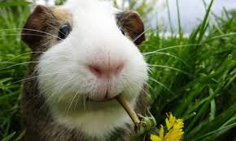
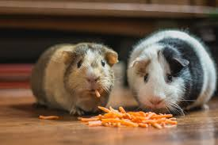
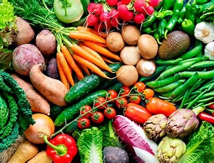

Los cuyos o cobayas son pequeños roedores originarios de América del Sur. Son animales domésticos muy populares por
su personalidad amigable y su cuidado relativamente sencillo

Cuidados básicos
Alimentación: Heno, pellets, vegetales frescos como zanahoria, espinaca y pimientos
Hábitat: Jaulas amplias, limpias y bien ventiladas
Salud: Visitas al veterinario especializado y evitar la humedad o el frío
Compañía: Son animales sociales, mejor tener al menos dos

Para satisfacer las necesidades de vitamina C de tu cuyo, considera los siguientes alimentos:
Frutas: Fresas, kiwi, naranjas, mandarinas, y pimientos (rojos y verdes) son ricas en vitamina
Verduras: Col rizada, brócoli, repollo, coliflor, pimiento rojo, perejil y espárrago
Cereales: Arroz integral, avena, trigo integral, mijo y maíz
Otros: Cacahuetes y nueces también son buenas fuentes de vitamina C

Asegúrate de ofrecer estos alimentos frescos y libres de pesticidas para la salud de tu cuyo